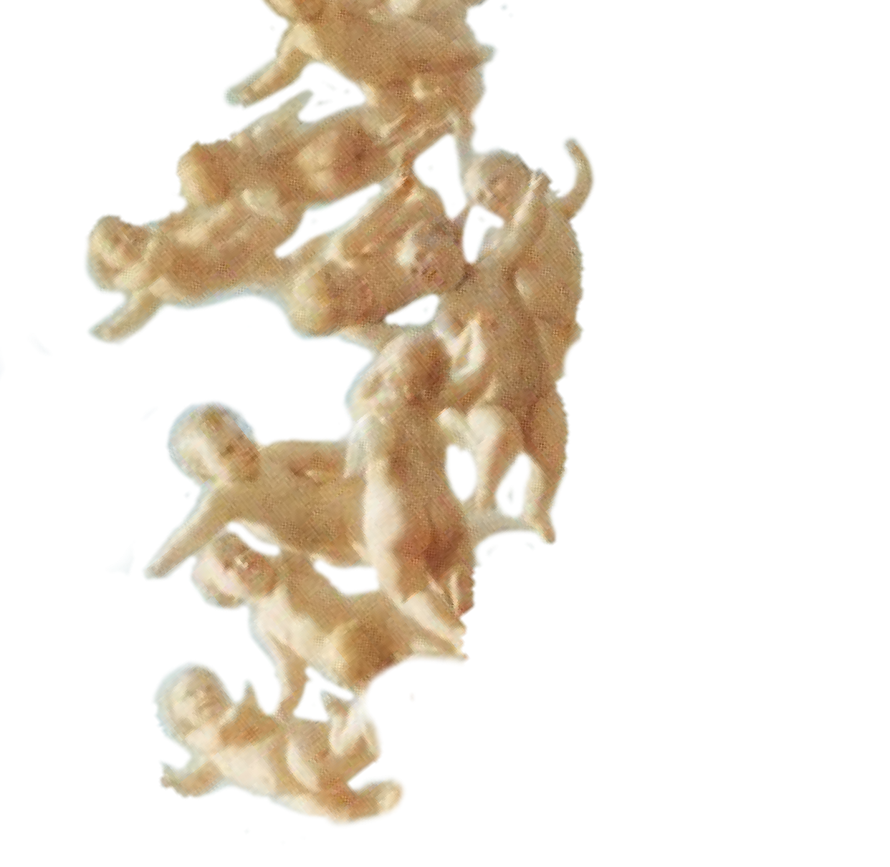

Slaughterhouse Five
So Billy stood up again, clung to the cross-brace. 'Where can I sleep?' he asked quietly.
'Not with me.' 'Not with me, you son of a bitch,' said somebody else.
'You yell. You kick.' 'I do?' "You're God damn right you do. And whimper.' 'I do?' 'Keep the hell away from here, Pilgrim.' And now there was an acrimonious madrigal, with parts sung in all quarters of the car.
Nearly everybody seemingly, had an atrocity story of something Billy Pilgrim had done to him in his sleep. Everybody told Billy Pilgrim to keep the hell away.
So Billy Pilgrim had to sleep standing up, or not sleep at all. And food had stopped coming in through the ventilators, and the days and nights were colder all the time.
On the eighth day, the forty-year-old hobo said to Billy, 'This ain't bad. I can be comfortable anywhere.'
'You can?' said Billy.
On the ninth day, the hobo died. So it goes. His last words were, 'You think this is bad? This ain't bad.'
There was something about death and the ninth day. There was a death on the ninth day in the car ahead of Billy's too. Roland Weary died--of gangrene that had started in his mangled feet. So it goes.
Weary, in his nearly continuous delirium, told again and again of the Three Musketeers, acknowledged that he was dying, gave many messages to be delivered to his family in Pittsburgh. Above all, he wanted to be avenged, so he said again and again the name of the person who had killed him. Everyone on the car learned the lesson well.
'Who killed me?' he would ask.
And everybody knew the answer, which was this: 'Billy Pilgrim.'
Listen--on the tenth night the peg was pulled out of the hasp on Billy's boxcar door, and the door was opened. Billy Pilgrim was lying at an angle on the corner-brace, self- crucified, holding himself there with a blue and ivory claw hooked over the sill of the ventilator. Billy coughed when the door was opened, and when he coughed he shit thin gruel. This was in accordance with the Third Law of Motion according to Sir Isaac Newton. This law tells us that for every action there is a reaction which is equal and opposite in direction.
This can be useful in rocketry. 